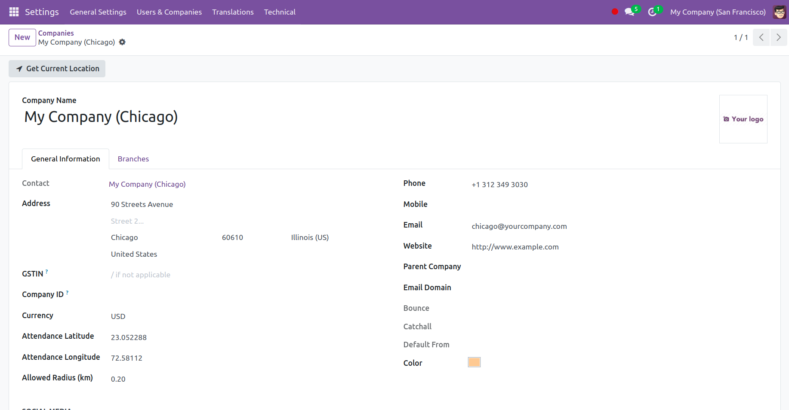
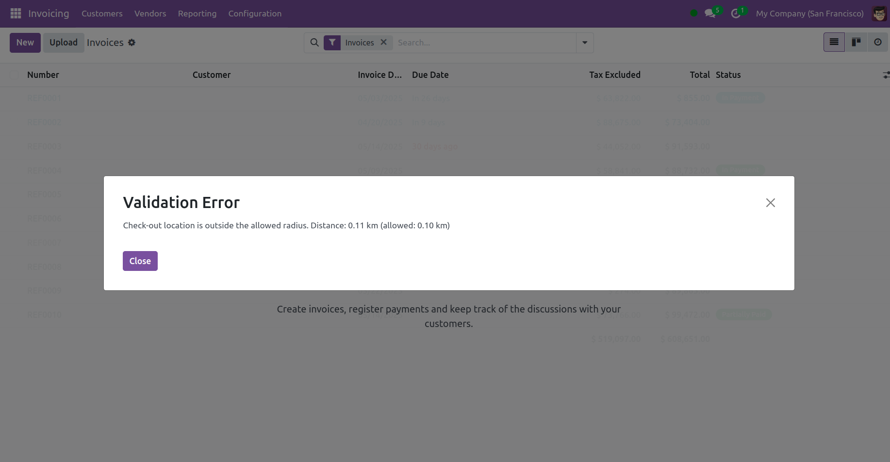

Screenshots

Configure your company's authorized attendance geofence coordinates easily within Odoo's company settings.

Employees are prompted to confirm their location during check-in/out, ensuring attendance is logged only within permitted zones.

Flexible remote work support allowing attendance without location restrictions for authorized remote employees.